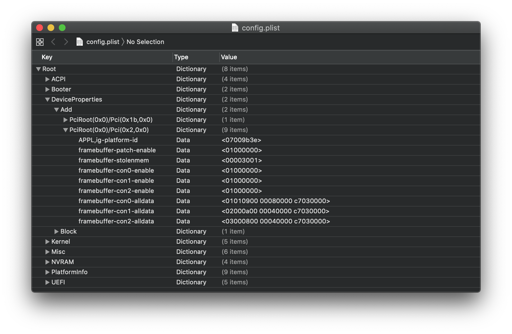

Last modified: Fri Apr 17 2020 14:43:03 GMT+0000 (Coordinated Universal Time)
GPU Patching
- Supported version: 0.5.7
This little section is for those who need more than what is provided by simple framebuffer patching and WhateverGreen's auto-patches:
Converting a clover fakeID to OpenCore
Guide moved here: Renaming GPUs
iGPU BusID Patching
This section is for users running "true" 300 series motherboards( B360, B365, H310, H370, Z390) who are having issues setting up their iGPU as a display out.
So to get started I'll assume you've already done basic framebuffer patches in your config from the Coffeelake portion of the guide, it should look something like this:

Now that we're prepped, we can start looking into busID patching. Checking the dumps on Insanelymac shows us this for the 3E9B0007 ID(Desktop UHD 630):
ID: 3E9B0007, STOLEN: 57 MB, FBMEM: 0 bytes, VRAM: 1536 MB, Flags: 0x00801302
TOTAL STOLEN: 58 MB, TOTAL CURSOR: 1 MB (1572864 bytes), MAX STOLEN: 172 MB, MAX OVERALL: 173 MB (181940224 bytes)
GPU Name: Intel UHD Graphics 630
Model Name(s):
Camelia: Disabled
Mobile: 0, PipeCount: 3, PortCount: 3, FBMemoryCount: 3
[1] busId: 0x05, pipe: 9, type: 0x00000400, flags: 0x000003C7 - DP
[2] busId: 0x04, pipe: 10, type: 0x00000400, flags: 0x000003C7 - DP
[3] busId: 0x06, pipe: 8, type: 0x00000400, flags: 0x000003C7 - DP
01050900 00040000 C7030000
02040A00 00040000 C7030000
03060800 00040000 C7030000
Looking at all this can be quite overwhelming, but we'll break it down to be a bit simpler. For use we care about this:
[1] busId: 0x05, pipe: 9, type: 0x00000400, flags: 0x000003C7 - DP
[2] busId: 0x04, pipe: 10, type: 0x00000400, flags: 0x000003C7 - DP
[3] busId: 0x06, pipe: 8, type: 0x00000400, flags: 0x000003C7 - DP
01050900 00040000 C7030000
02040A00 00040000 C7030000
03060800 00040000 C7030000
These are your iGPUs ports by default, lets go through port 1 and see what each section is used for:
The first port:
01050900 00040000 C7030000
Port: 01
- 01050900 00040000 C7030000
busId: 0x05
- 01050900 00040000 C7030000
Pipe Number 9 (little endian):
- 01050900 00040000 C7030000
Connector type: DisplayPort
- 01050900 00040000 C7030000
Flags - We leave it as default:
- 01050900 00040000 C7030000
Things to note:
- You cannot use the same busId twice, having 2 in use will create conflicts
- Pipe number and flags don't need to changed
List of connector types:
00 04 00 00- DisplayPort00 08 00 00- HDMI04 00 00 00- Digital DVI02 00 00 00- LVDS (for laptops)01 00 00 00- Dummy port
Mapping video ports
Plug display into HDMI port
Set Port 1 to the HDMI connector type:
- 01xx0900 00080000 C7030000
Disable ports 2 and 3 with busid=00:
- 02000A00 00040000 C7030000
- 03000800 00040000 C7030000
Walk through busids for Port 1 if the previous didn't work(yup you gotta do a shit ton of reboots). The maximum busid on most platforms is 0x06
- 01010900 00080000 C7030000
- 01020900 00080000 C7030000
- 01030900 00080000 C7030000
- etc
If you still get no output, set port 1's busid to 00 and start going through busids for port 2 and so on
- 01000900 00040000 C7030000
- 02xx0A00 00080000 C7030000
- 03000800 00040000 C7030000
Adding to your config.plist
So adding these patches are simple though a bunch of entires are required:
- framebuffer-con0-enable =
01000000 - framebuffer-con1-enable =
01000000 - framebuffer-con2-enable =
01000000 - framebuffer-con0-alldata = port 1
- framebuffer-con1-alldata = port 2
- framebuffer-con2-alldata = port 3
So when adding the patches, port 1 will actually become con0 as the ports start at 0. These are also all data types when entering your values.
A finished config should look something like this:

Source for iGPU BusID patching: CorpNewt's Brain